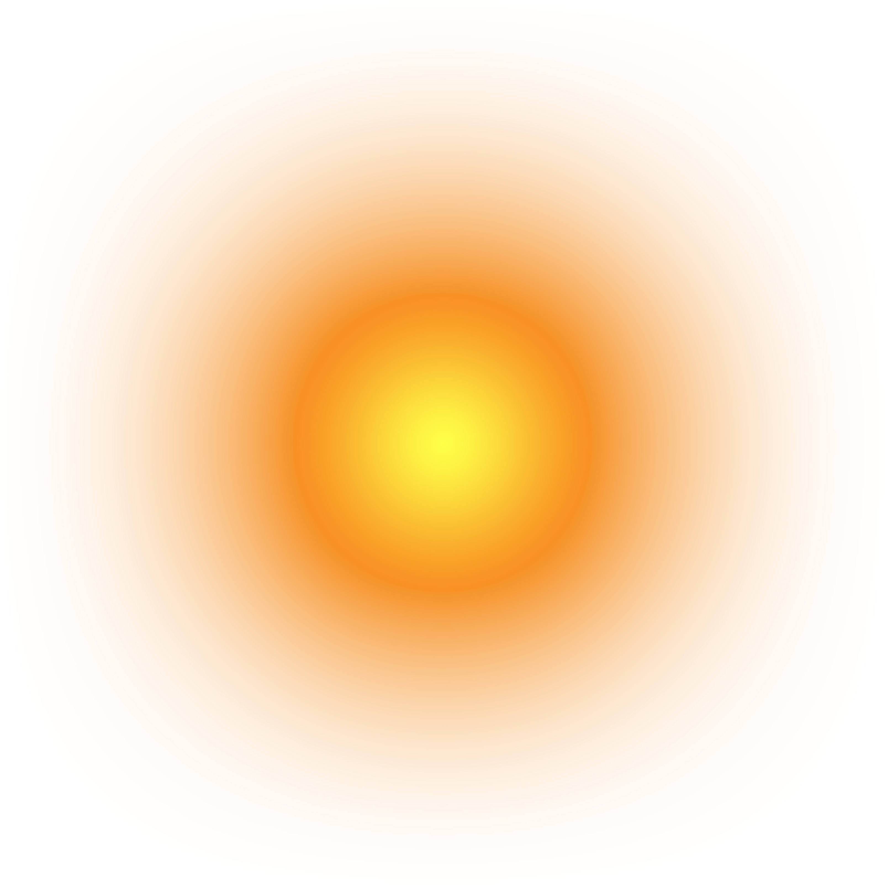
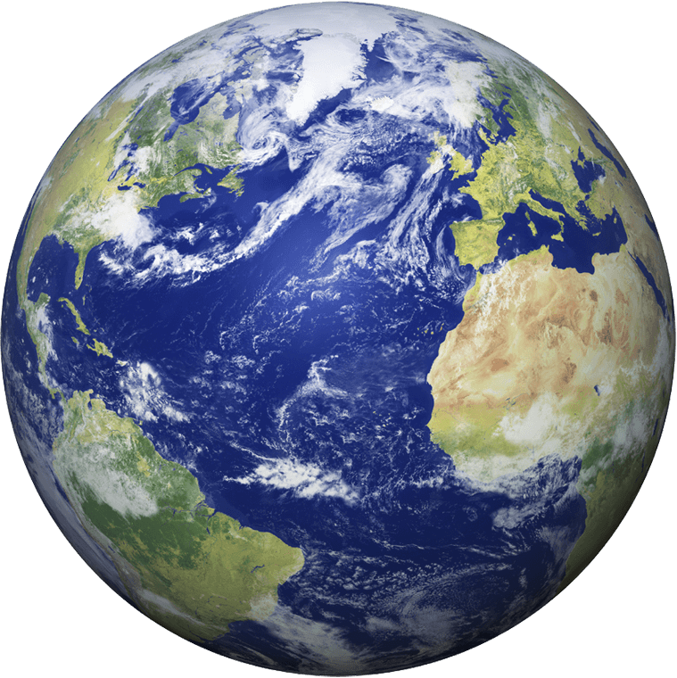

A Scale Model of the Solar System
By Annie Fu
scroll right →
To scroll right, use shift + mousewheel. If you have a touchpad, swipe sideways.
Scrolling through Space
The concept of “scale” is one of the most common themes in the scientific field. We are taught how to scale and compare objects at a very early age. But the immensity of the universe is far greater than what we can intuitively comprehend.In this model, you'll see (or scroll) through the immensity of our solar system.
Coming up on the central star of our galaxy, the Sun:
Sun ↓

Mercury ↓

↓ Venus

Diagrams taught in school tend to lead students to believe that the Earth is the same size or even larger than the sun
The distance between the Earth and the Moon could fit every other planet in the solar system. The average Earth to Moon distance
is 384,400 km while the total distance of the average of all the planets in our solar system (except Earth) is 380,016
Earth ↓

Mars ↓